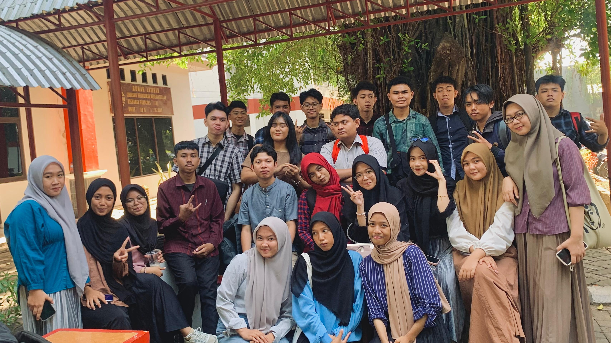
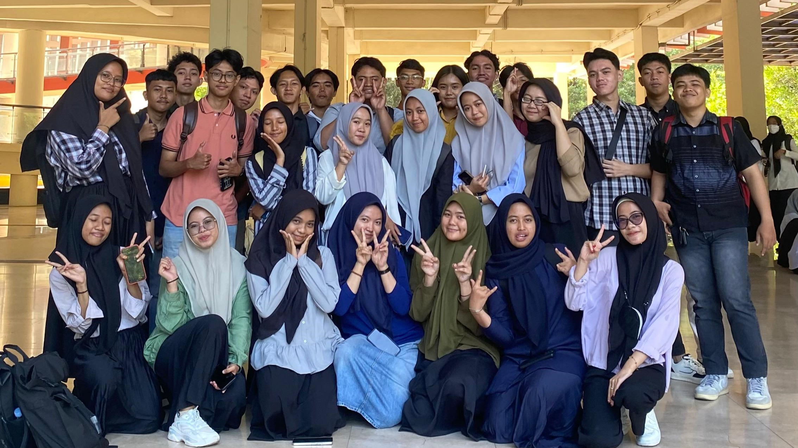
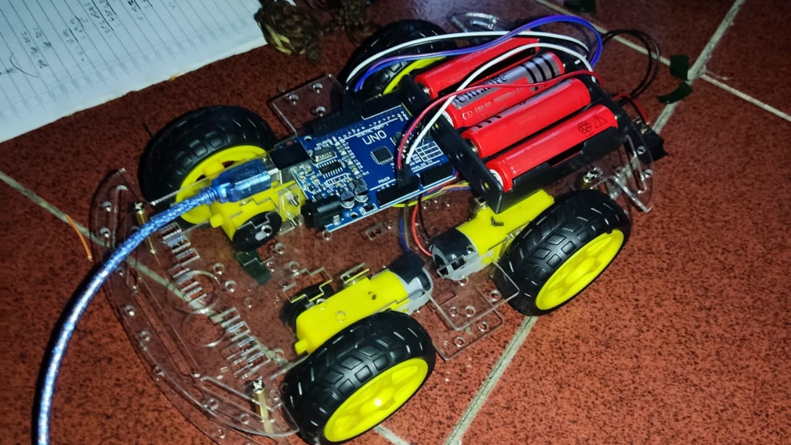

|
Nama: Joy Febrianto Hale NIM: 230210501038 Kelas: Tekom C Alamat: Alamat Sekarang: Jl.Cendrawasih Asal Sekolah: SMK Negeri 10 Makassar Motto: "Life is beautiful, but you don't have a clue" |
|
Selama kuliah, saya mengalami banyak hal baru yang menantang sekaligus memperkaya pengetahuan saya. Di awal semester, menyesuaikan diri dengan lingkungan kampus dan materi perkuliahan terasa cukup sulit. Namun, berkat dukungan dosen yang selalu siap membantu, saya bisa memahami materi dengan lebih baik, terutama di mata kuliah yang berhubungan dengan teknologi informasi. Praktikum dan proyek kelompok juga membantu saya merasa lebih percaya diri dalam bekerja sama dan meningkatkan keterampilan teknis yang penting di dunia kerja. Di luar kegiatan akademik, saya menghabiskan waktu untuk mengembangkan keterampilan pribadi dan membangun persahabatan. Saya sering mengikuti seminar yang diadakan oleh fakultas untuk memperdalam pemahaman tentang bidang studi saya. Waktu luang diisi dengan obrolan santai atau mengerjakan tugas. Meskipun tidak terlibat dalam organisasi kampus, saya merasa pengalaman kuliah saya tetap kaya dan berharga |
|
|
|    |
| No | Nama | Jenis Kelamin | Alamat | Asal Sekolah | |
|---|---|---|---|---|---|
| Lengkap | Panggilan | ||||
| 1 | Muhammad Taufiq Alhidayah Syah | Pace | Laki-laki | Jl. Toddopuli 3 | SMA Negeri 1 Mimika |
| 2 | Surya Radi Ramdhani S. | Surya | Laki-laki | Pao-Pao Permai | SMA Negeri 8 Makassar |
| 3 | M Aflah Ogi Daffah | Ogi | Laki-laki | JL. K.H.Muh.Yusuf | SMK Negeri 1 Pangkep |
| 4 | Nabil Al Buqari Jufri | Nabila | Laki-laki | Pao-Pao Permai | SMK Negeri 1 Bantaeng |